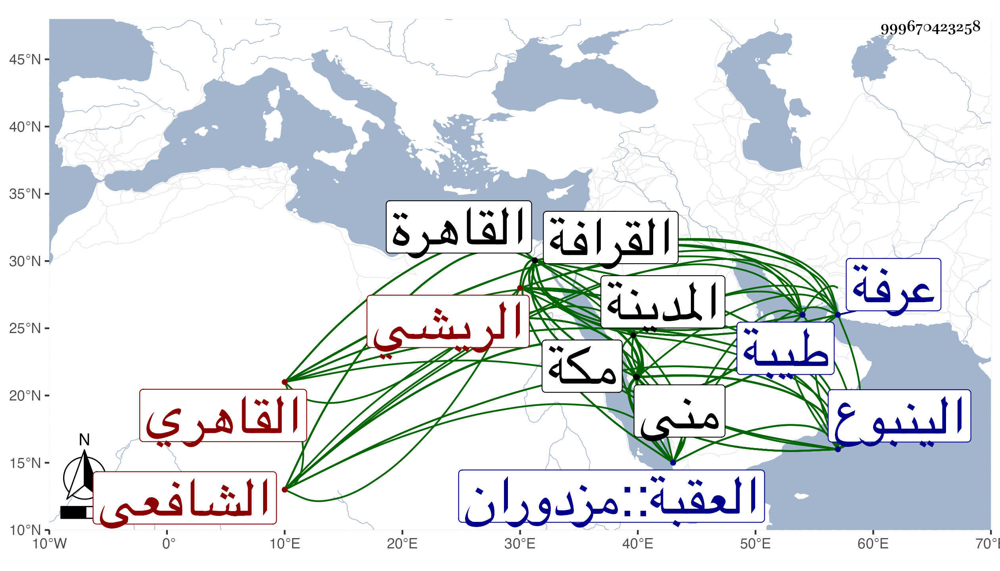

0902Sakhawi.DawLamic.ITO20230111-ara1.EIS1600.999670423258
Biography ID: 999670423258
2
أحمد بن عثمان بن محمد الشهاب الريشي القاهري الشافعي ويعرف بالكوم الريشي وهي من ضواحي القاهرة خربت . ولد تقريبا سنة ثمان وسبعين وسبعمائة بالقاهرة وحفظ بها القرآن وصلى به والعمدة وقال أنه عرضها على ابن الملقن والبرهانين ابن جماعة والأبناسي والصدر الأبشيطي وكتبا ، واشتغل يسيرا بالفقه ثم انتقل إلى كوم الريش فسكنها وخطب بجامعها عن التقي الزبيري والمجد إسماعيل الحنفي مدة فاشتهر بالانتساب لها ، ثم انتقل إلى القاهرة وخطب بجامع عمرو وغيره وأدب الأطفال وأقبل على الطلب فأخذ الفقه عن البرهان البيجوري والشمس الشطنوفي والعلاء البخاري وآخرين ، ولازم الشمس العراقي في الفقه والفرائض قال وأجاز لي ، وبحث في الحساب على الجمال المارداني وأخذ النحو عن الشطنوفي والعز بن جماعة وغيرهما كالشمس السيوطي والمعقولات عن العز البساطي والعلاء البخاري وغيرهم وعلم الحديث عن الولي العراقي بل كان يقرأ عليه في شرحه لجمع الجوامع وعلى العز ابن ماجه وشرحه لابن الصلاح وشرح العمدة لابن دقيق العيد بحيث قيل أنه لو عكس كان أولى ومما بحثه على العز التمهيد والكوكب وشرح الألفية لابن المصنف وشرح الطوالع للأصبهاني والكثير ، وتلا ببعض الروايات على الفخر إمام الأزهر والشرف يعقوب الجوشني والشطنوفي وغيرهم وبالسبع جمعا على الزراتيني وسمع الحديث على ابن أبي المجد والتنوخي والعراقي والهيثمي وابن الكويك والشهاب البطائحي وقاري الهداية وآخرين ولم ينفك عن ملازمة الدروس سيما القاياتي والونائي بل لازم الأمالي عند شيخنا وغيرها خصوصا في شهر رمضان ومع ذلك كله فلم يمهر ولا كادي نعم كان يستحضر أشياء مفيدة لكثرة تواليها على سمعه ويكثر من إيرادها بحيث صار الطلبة تضيفها إليه هذا مع إذن العزلة وكذا أذن له الززاتيتي في إقراء السبع وغيرها وآخرون كالشطنوفي ووصفه بالشيخ الإمام الفاضل الكامل العالم القدوة العمدة بل أذن له الولي العراقي حين قراءته عليه لألفية أبيه بحثا ووصفه بالشيخ الفاضل البارع الكامل المفنن ذي المناقب الحميدة والمزايا العديدة نفعه الله ونفع به ورزقه فهم المشتبه وقراءته بأنها قراءة بحث ونظر وإتقان معتبر في إقرائها وإفادتها ، وانتهى ذلك في شوال سنة عشرين ، وحج في سنة تسع عشرة وقال كما قرأته بخطه أنه تلا من البركة إلى الينبوع إحدى عشرة ختمة ومنه لمكة خمسا وفي الطواف واحدة ، ومن مكة إلى منى ثم عرفة ثلاثة ومن منى إلى طيبة سبعة وعند رأس النبي صلى الله عليه وسلم ثلاثة ومن المدينة إلى الينبوع خمسة وكذا منه إلى الأزلم ثم منه إلى العقبة ثم منها إلى البركة خمسة فجملتها أربعون وبدأ في ختمة بالبركة وأهدى ثوابها للحضرة النبوية زيادة في شرفه وإلى سائر الأنبياء والمرسلين والصحابة أجمعين ، وحدث باليسير سمعت عليه أشياء وكتبت من نوادره وما جرياته جملة وفيها الكثير من المضحكات سيما أبيات ذيل بها على أبيات السهيلي يا من يرى وأنشد عن شيخه الشمس السيوطي قوله :
| جاوزت ستين سنه | كأنها كانت سنه |
| وعيشتي قد أصبحت | من بعد صفو آسنه |
| إن كان لي عمر فقد | قطعت منه أحسنه |
| يا ليت شعري كله | سيئة أو حسنه |
وقد ترجمه شيخنا فقال فيما قرأته بخطه : كان أبوه طحانا بكوم الريش ونشأ فحفظ القرآن وحصل القراءات وحفظ كتبا وناب في الخطابة عن المجد إسماعيل الحنفي بكوم الريش وأقرأ أولاد التاج بن الظريف ثم أولاد ناصر الدين بن التنسي ثم أقبل على الاشتغال فلازم الشطنوفي والشمس العراقي والعز بن جماعة ، واشتهر بالطلب ونزل في الجهات وكان حسن المفاكهة صبورا على مزح من يعاشره من الرؤساء ويجيد اللعب بالشطرنج ويستحضر كثيرا من المسائل وإذا حفظ شيئا أتقنه ولكنه لم يكن في حسن التصوير بالماهر مواظبا مجالسي في الإملاء إلى أواخر ذي الحجة فلم ينقطع عنها غير مجلسين ، وكان يذكر أنه واظب القراءة في مشهد الليث نحو خمسين سنة انتهى . مات في يوم الأربعاء حادي عشري المحرم سنة اثنتين وخمسين وصلى عليه في يومه بجامع الأزهر تقدم الناس الولوي السفطي القاضي ودفن بالقرب من ضريح الليث بالقرافة رحمه الله وإيانا .
